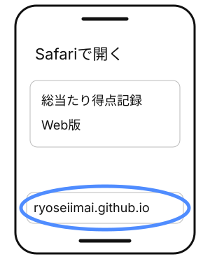
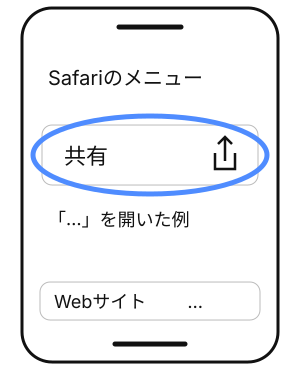
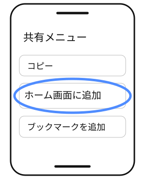
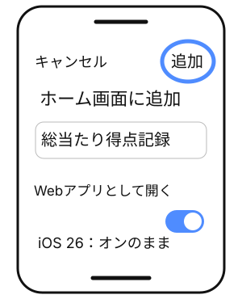
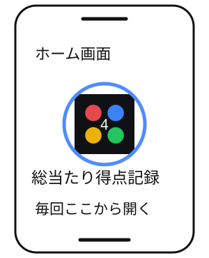

iPhoneに『総当たり得点記録』を入れる方法
1分で終わる・無料・ログイン不要
アプリを開く（Safari）このボタンでアプリの画面を開いてから、下の手順で追加してください。
1Safariで開く
上のボタンを押して、Safariで「総当たり得点記録」を開きます。
LINE内で開いたら、右下などの共有ボタンから「Safariで開く」を選びます（自動で外部ブラウザに開く場合もあります）。
別のブラウザが開いた場合は、アプリのURLをコピーしてSafariに貼り付けてください。

Safariで開けたら次へ 2共有ボタンをタップ
iOS 26：「…」（その他）→「共有」をタップ。タブの配置が「下」または「上」なら、共有ボタンを直接タップします。
iOS 18以前：Safariのメニューバーにある共有ボタンをタップします。
共有ボタンの目印は四角に上向きの矢印です。

図はiOS 26のメニュー例 3「ホーム画面に追加」をタップ
共有メニューを下へスクロールして、「ホーム画面に追加」を選びます。
見つからない場合は、一番下の「アクションを編集」から「ホーム画面に追加」を追加してください。

4右上の「追加」をタップ
iOS 26以降：「Webアプリとして開く」のスイッチが出たら、オンのまま「追加」をタップします。オフならオンにしてください。
iOS 18以前：そのまま「追加」をタップします。

5ホーム画面のアイコンから開く
ホーム画面に戻り、「総当たり得点記録」のアイコンをタップ。これで準備完了です。
最初の記録も、次回からの記録も、必ずこのアイコンから。

図は操作を説明するイラストです。iOSのバージョンや設定によって、位置や表示が異なります。
Androidの人は、Chromeの右上「︙」→「ホーム画面に追加」。
App Store版は準備中です。